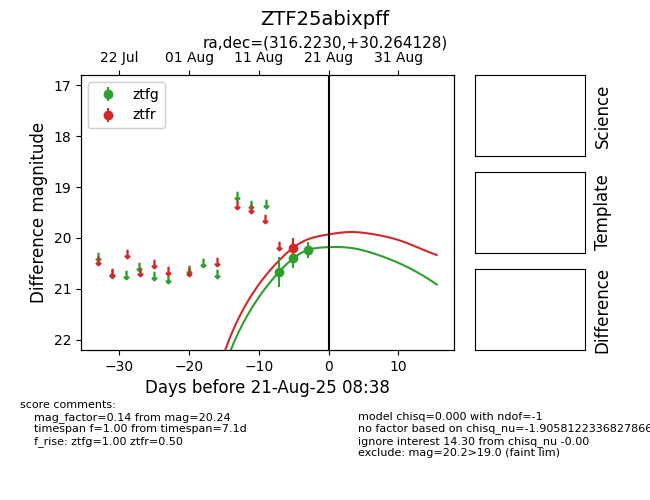

Target ZTF25abixpff at 2025-08-26 10:32, see:
FINK: fink-portal.org/ZTF25abixpff
Lasair: lasair-ztf.lsst.ac.uk/objects/ZTF25abixpff
ALeRCE: alerce.online/object/ZTF25abixpff
alt names
ZTF25abixpff (ztf,fink)
coordinates:
equatorial (ra, dec) = (316.2229,+30.26414)
galactic (l, b) = (75.6092,-11.12389)
photometry
last ztfg=20.26, ztfr=20.00
4 ztfg, 2 ztfr detections
